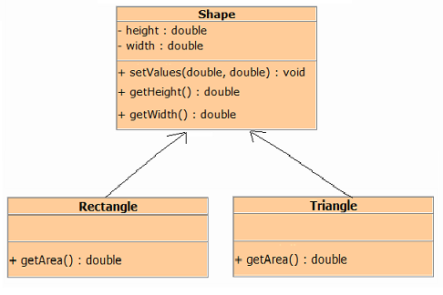

9.7 Polymorphism
One of the key features of inheritance is that a
reference variable of a superclass type can point to an object of its subclass. Polymorphism is the art of taking advantage of this simple but powerful and versatile feature.
Consider the following example, Shape is super class for Rectangle and Triangle class.

Look at the following statement that declares a reference variable named rect:
Rectangle rect;This statement tells us that the rect variables data type is Rectangle. Therefore, we can use the rect variable to reference a Rectangle object, as shown in the following statement:
rect = new Rectangle();In above figure the Shape class is used as the superclass for the Rectangle class. Therefore an object of the Rectangle class is not just a Rectangle object. It is also a Shape object. In other words, we can use a Shape type reference variable to reference a Rectangle object :
Shape shape;
shape = rect; // shape point to the object rect. After the above statement executes, the object is treated as an object of the class Shape. Therefore following statement is legal.
shape.setValues(4,5); // Set values in rectangle object.Now consider the statement, we wants to call getArea method using shape reference variable.
double a = shape.getArea(); //illegalAlthough a shape variable can reference object of class that extends Shape but a shape variable can be used to call only those methods defined inside Shape. So in order to access getArea method of Rectangle class, we will use Rectangle type reference variable. As shown in following statement :
double a = rect.getArea(); // legalSimilarly Triangle is also sub class of Shape class. So all statements are same for triangle object.
So we can summarize this with the statement that Super class reference
variables are polymorphic reference variables. They can refer to objects of their own class or to objects of the subclasses inherited from their class.
Here is complete program :
Program (Shape.java)
/**
* A class Shape that holds width and height
* of any shape
*/
public class Shape
{
private double height; // To hold height.
private double width; //To hold width or base
// Set height and width
public void setValues(double height, double width)
{
this.height = height;
this.width = width;
}
//Get height
public double getHeight()
{
return height;
}
//Get width
public double getWidth()
{
return width;
}
} Program (Rectangle.java)
/**
* This class Rectangle calculates
* the area of rectangle
*/
public class Rectangle extends Shape
{
//Calculate and return area of rectangle
public double getArea()
{
return getHeight() * getWidth();
}
}Program (Triangle.java)
/**
* This class Triangle calculates
* the area of triangle
*/
public class Triangle extends Shape
{
//Calculate and return area of triangle
public double getArea()
{
return (getHeight() * getWidth()) / 2;
}
} Program(PolymorphismDemo.java)
/**
* This program demonstrates polymorphic behavior.
*/
public class PolymorphismDemo
{
public static void main(String[] args)
{
Shape shape;
// assign subclass reference to subclass variable
Rectangle rect = new Rectangle();
// shape points to the object rect.
shape = rect;
// Set data in Rectangle's object
shape.setValues(78, 5);
//Display the area of rectangle
System.out.println("Area of rectangle : " + rect.getArea());
// assign subclass reference to subclass variable
Triangle tri = new Triangle();
// shape points to the object rect.
shape = tri;
// Set data in Triangle's object
shape.setValues(34,3);
//Display the area of triangle
System.out.println("Area of triangle : " + tri.getArea());
}
}Output :
Area of rectangle : 390.0
Area of triangle: 51.0
Upcasting and Downcasting
As illustrated above, a reference variable of a superclass type can point to an object of its subclass. This is known as upcasting :
Shape shape;
Rectangle rect = new Rectangle();
shape = rect; // Upcasting
Or we could do something equivalent, such as
Shape shape = new Rectangle(); // Upcasting Upcasting occurs automatically. Downcasting occurs when a type cast is performed from a super class to a sub class. Downcasting must be done very carefully.
Shape shape;
Rectangle rect;
rect = (Rectangle)shape; // Downcasting The instanceof Operator
The instanceof operator is an boolean operator that tests whether an object belongs to a given class.
Consider the following expression
rect instanceof RectangleThis is the form of a boolean expression that will return true if the object referenced by rect is an instance of Rectangle. Otherwise, the expression returns false.
Following code segment illustrates how the operator instanceof works :
Rectangle rect = new Rectangle();
if (rect instanceof Rectangle)
System.out.println("Yes, rect is an instance of Rectangle.");
else
System.out.println("No, rect is not an instance of Rectangle.");This code will display "Yes, rect is an an instance of Rectangle."
The instanceof operator recognizes an object as being of a given type, even if that type is a superclass of the actual type of the object. For example, look at the following code:
Rectangle rect = new Rectangle();
if (rect instanceof Shape)
System.out.println("Yes, rect is an instance of Shape.");
else
System.out.println("No, rect is not an instance of Shape.");
Even though the object referenced by rect is a Rectangle object, this code will display "Yes, rect is an instance of Shape."
The instanceof operator returns true because Rectangle is a subclass of Shape.